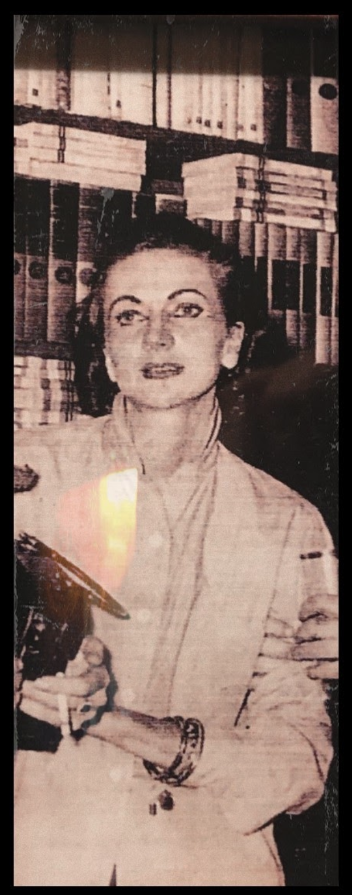
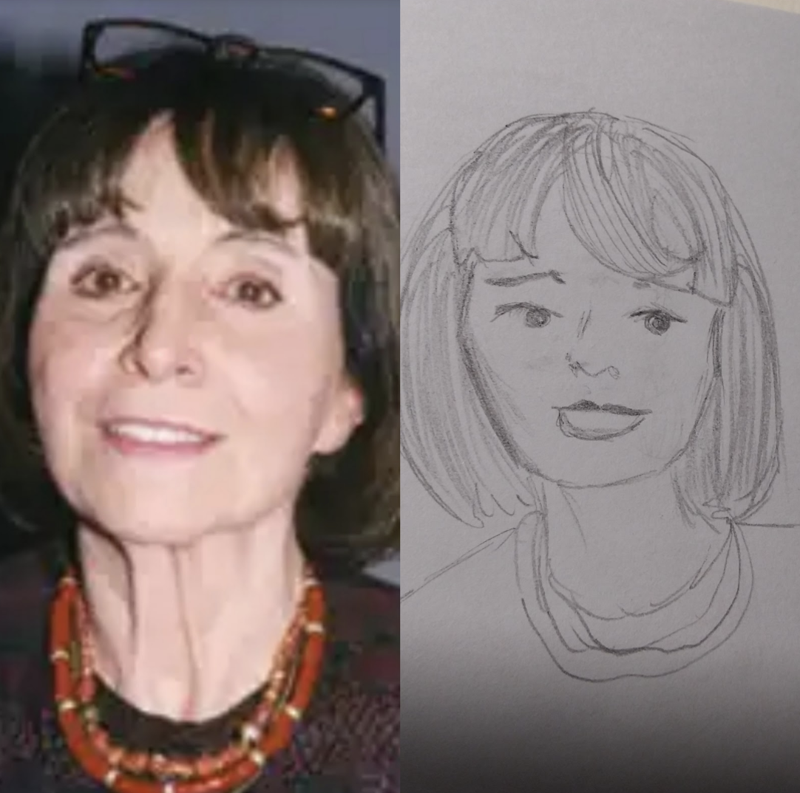

Filoginia - Antología escolar de escritoras hispánicas contemporáneas
María Luisa Elío
Retrato de María Luisa Elío
Noelia Montero. Retrato de María Luisa Elío(CC BY-SA)

Noelia Montero. Retrato gráfico de María Luisa Elío(CC BY-SA)
María Luisa Elío Bernal nació en Pamplona el 17 de agosto de 1926 y falleció en la Ciudad de México el 17 de julio de 2009. Fue una escritora del exilio republicano español en México.
Llegó a México en 1940, después de la Guerra Civil Española. Estudió teatro con Seki Sano. Participó en el grupo de Poesía en Voz Alta y colaboró en Novedades y Revista de la Universidad de México. Realizó guiones de cine como El balcón vacío (1961). El año de su muerte se publicó la biografía María Luisa Elío Bernal. La vida como nostalgia y exilio (Universidad de La Rioja, Logroño, 2009) de Eduardo Mateo Gambarte.
Elia Nepomuceno. Retrato de María Luisa Elío (CC BY-SA)
Elia Nepomuceno. Retrato gráfico de María Luisa Elío(CC BY-SA)
Retrato a Maria Luisa Elío, por Elia Nepomuceno
Maria Luisa Elío nació el 17 de agosto de 1926, en Pamplona, y falleció el 17 de julio de 2009, es decir, falleció con 84 años. Era española, pero tuvo que emigrar a México debido a la Guerra Civil.
Menor de las tres hijas de Luis Elío y de Carmen Bernal López de Lago, fue una escritora del exilio republicano español en México.
Era una mujer con cara dulce, pelo liso y una sonrisa risueña. Maria Luisa es escritora, actriz de teatro y actriz de cine. Su padre era un político liberal, y apenas al comenzar la Guerra Civil española, su esposa, por temor a correr la misma suerte, huyó de Pamplona con las niñas, sin equipaje, con la intención de llegar al país vecino. Sufrieron un arresto de tres meses en Elizondo, al ser liberadas deambularon por distintas ciudades españolas, hasta llegar a Francia en julio de 1937. Allí Maria Luisa y sus hermanas fueron acogidas en diferentes internados y orfanatos. La familia daba por muerto al señor Elío, pero tras un tortuoso peregrinaje, logró reunirse con su mujer y sus hijas en París, el 18 de marzo de 1940. Un tiempo más tarde, con ayuda de Indalecio Prieto, la familia se trasladó a México, donde estuvieron residiendo definitivamente.
Maria Luisa asistió a la Escuela Juan Ruiz de Alarcón y realizó el bachillerato de la Academia Hispano-Mexicana. Posteriormente, cursó estudios de teatro y formó parte del grupo experimental Poesía en Voz Alta, en el que participaban escritores como Octavio Paz y Carlos Fuentes, y la pintora Leonora Carrington.
Escribió libros como: Tiempo de llorar y otros relatos, y Cuaderno de apuntes, también protagonizó películas como: En el balcón vacío y Alma Canaria.
En el balcón vacío es una película que fue dirigida por Jomí García Ascot, esposo de María Luisa Elío, y protagonizada por dicha mujer, además de también por Nuri Peña, Conchita Genovés, Jaime Ñuñoz de Baena, y Belina García en 1962. Aunque fue realizada entre 1961 y 1962, se exhibió en una serie de festivales en 1962. En México no se estrenó sino hasta 1976 en la Cineteca Nacional.
Esta película fue filmada con un presupuesto de 50 mil pesos mexicanos y una cámara de 16 mm. Dicha película explora la Guerra Civil española desde el punto de vista de una niña, Gabriela, que cuando ya es adulta y exiliada en México, recuerda aquellos acontecimientos que le marcaron de esa etapa.
María Luisa Elío Bernal, una de las autoras del guion de la película, fue una escritora del exilio republicano español en México que nació en Pamplona el 17 de agosto de 1926 y falleció en la Ciudad de México el 17 de julio de 2009. Era la menor de las tres hijas de Luis Elío Torres y de Carmen Bernal López de Lago.
Escena de la película
Narradora: Fue aquella tarde cuando vi aquel hombre descolgarse por los tejados y esconderse.
Estate quieto hombre, estate quieto, que no te vean.
Yo no digo nada, no tengas miedo, de verdad, te lo prometo pero estate quieto, que si no te van a ver.
¿Lo ves? Yo miro hacia otro lado, voy a mirar a otra parte para que piensen que no estás aquí.
¡Mira! ¡Mira que bien lo hago! ¿Verdad que lo hago bien?
No te muevas. Hazte pequeñito, pequeñito, pequeñito.
Una vez, ya se van.
Mujer.—¡Ahí ¡ahí! ¡A por él! ¡Cógelo! ¡En la ventana! ¡Mírenlo que se escapa! ¡Apúntelo!
Niña.—¡Mamá! La guerra ha venido.
Narradora.—La niña tenía miedo. Era un miedo tan grande que no la dejaba moverse.
Qué haría la niña con ese miedo que le pesaba tanto.
Llevaba ya con él mucho rato en cadena en el pasillo sin apenas moverse.
Llevaba también mucho rato pensando por qué tenía miedo y no sabía.
Ella sabía cuando había sido mala de qué tenía miedo. Sabía que no debía de ejercer ni militar ni pelearse con su hermana. Sabía también que debía estudiar y ser buena para que no castigaran. La niña sabía muchas cosas pero no sabía por qué tenía miedo.
No era hoy el diablo lo que la asustaba, porque ella había sido buena y tampoco el coco que se esconde para asustar a los niños malos.
Era esto lo que le asustaba porque ella había sido buena.
A qué temía entonces tanto miedo tenía la niña, si sabía que a los niños buenos no se les castiga. Pero seguí encogida en aquel pasillo con miedo ahí tan grande en un cuerpo tan chico para guardarlo mientras las bombas deshacían la ciudad.
Y ahora trataba de acordarme de cómo eran las cosas antes. Antes de que llegara aquella guerra. Y no pude hacerlo.
Conclusión
Las películas documentales de la Guerra Civil siempre me han parecido muy interesantes ya que te enseñan la historia de nuestro país y cómo no volver a cometer aquellos errores, y todavía más si es desde un punto de vista femenino, ya que en aquella época las mujeres no podían dar su opinión sobre las cosas, no tenían derecho a casi nada que no fuera ser ama de casa, o realizar distintas labores de cuidado.
Es muy complicado ponerse en la piel de las personas que se exiliaban a otros países por culpas de las guerras que había en su lugar de nacimiento, ya que nosotros afortunadamente no hemos vivido esas tragedias, pero aun así, se me haría muy difícil exiliarme de mi lugar de origen simplemente porque no respeten mis ideologías políticas y me quieran asesinar por ello.
Pablo Turmo. Guion inspirado por En el balcón vacío(CC BY-SA)
Introducción.
María Luisa Elío Bernal fue una escritora del exilio republicano español en México. Nació el 17 de agosto de 1926, en Pamplona, y falleció el 17 de julio de 2009, en Ciudad de México, México. Su padre fue un burgués republicano durante la dictadura y su madre ama de casa. María se exilió junto con su madre a causa del golpe de estado, la guerra civil y la persecución política. Durante este periodo de su vida residió en México y Cuba, donde desarrolló sus obras y amistades con otros escritores además de su compañero de vida Jomi García Ascot.
El tema de la película es el exilio y la dictadura española. En la parte del libro que vamos a representar se puede ver bien el ambiente de España bajo la dictadura y el modo en que la protagonista reacciona.
Lectura dramatizada (basada en la película, por Pablo Turmo Luckam)
PERSONAJES:
Gabriela (Lola)
Preso (Pablo)
Niños (Adrián y Saúl)
PRESO.— ¿Por qué tengo que estar encarcelado sólo por no querer sus malditos ideales? Ni siquiera me dejan tomar un mísero cigarrillo. ¿Cuánto tendré que esperar para que este sufrimiento cese?
(Pasa una tarde sin que nada ocurra)
NIÑOS.— ¡Míralo allí encerrado! ¡Es un rojo! Míralo, está allí encerrado y no puede hacer nada. Vamos a hablar con él.
(Los niños se acercan a la cárcel)
NIÑOS.— Hola, cómo te llamas preso.
PRESO.— No tengo por qué decirte eso.
NIÑOS.— Sabía que dirías algo así. ¡Una respuesta de rojo!
PRESO.— No hables de lo que no entiendes niño.
NIÑOS.— El que no sabes eres tú hipócrita, no amas a España.
PRESO.— Te equivocas, ¿de verdad crees que no amo a mi país? Amo a España y creo que esta guerra acabará con ella.
NIÑOS.— ¡Para! Eres un rojo y con eso me basta par dejar de escucharte.
(Los niños se van hacia atrás)
PRESO.— ¡Niños! ¿Me puedes traer un cigarrillo?
NIÑO.— Que dices rojo de mierda, para ti no debería de haber nada, vete al infierno. Vamos a tirarle piedras.
(Los niños empiezan a arrojar piedras hacia el preso)
NIÑOS.— Toma rojo
NIÑOS.— Seguir dándole, toma toma rojo
(Se acerca Gabriela)
GABRIELA.— ¿Qué hacéis chicos porque le tratáis así?
NIÑOS.— ¡Es un antisistema, que se vaya al infierno! Venga vámonos.
(Los niños se van)
GABRIELA.— (Se acerca al preso) Buenas qué haces aquí.
PRESO.— Nada niña no lo entenderías son cosas de mayores.
GABRIELA.— Bueno puedo ayudar en algo.
PRESO.— Mira niña Déjame en paz lo único que quiero es un cigarro
(Gabriela se vuelve a su casa.
Le roba un cigarro a su madre y vuelve a ver al preso)
PRESO.— ¿Que haces aquí otra vez niña?
(Gabriela saca el cigarrillo).
NIÑA.— Tome señor le he traído un cigarrillo espero que le guste.
PRESO.— Muchas gracias niña vete antes de que te vea alguien.
(Gabriela vuelve a su casa)
Conclusión
En muchas partes de la obra se observa la mentalidad machista y cómo reprimían los pensamientos democráticos, liberales o revolucionarios. Algunos ejemplos son: cuando los niños llaman rojos a los republicanos, el encarcelamiento de hombres por sus ideas y demás acciones.
Gabriela, protagonista de la obra, expresa su oposición a los pensamientos machistas y opresores de la dictadura. Su padre era liberal burgués y su conducta y la de su hija simbolizan la historia de los republicanos y los exiliados. María Luisa Elío vivió su vida de exilio en México y Cuba con su compañero Jomí García Ascot y escribió con Gabriel García Márquez, quien le dedica la obra Cien años de soledad.